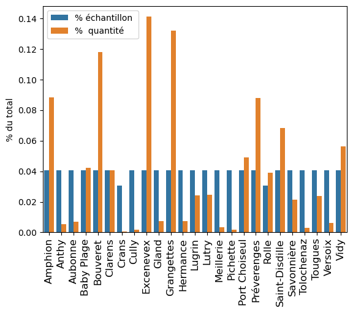
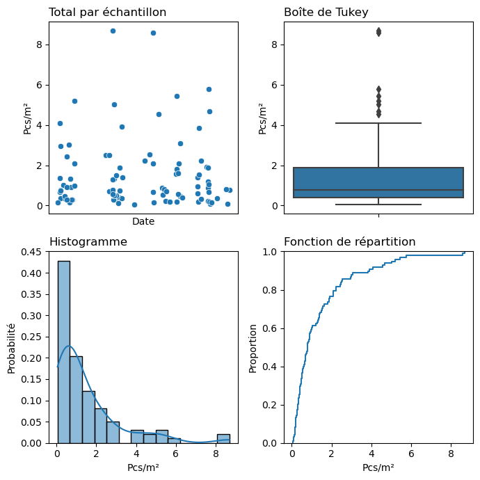
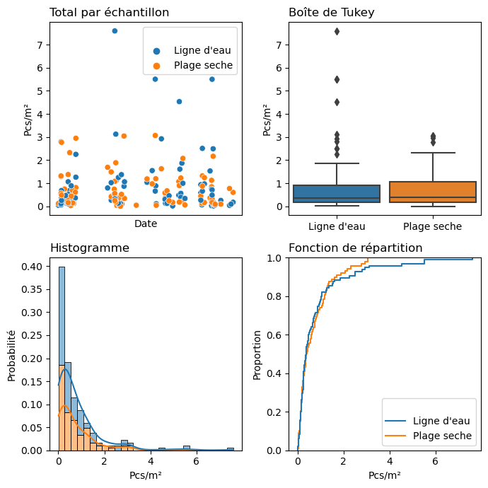
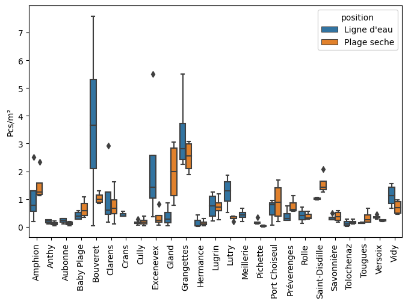

Macro déchets plage et position#
Résultats agrégés par objet, position et échantillon
| Plage | Position | Quantité | Échantillon | |
|---|---|---|---|---|
| G24 | Amphion | 1 | 2 | ('amphion', '01.02.2022') |
| G24 | Amphion | 2 | 42 | ('amphion', '01.02.2022') |
| G66 | Amphion | 2 | 7 | ('amphion', '01.02.2022') |
| G131 | Amphion | 2 | 1 | ('amphion', '01.02.2022') |
| G31 | Amphion | 1 | 2 | ('amphion', '01.02.2022') |
Nombre cumulé d’échantillons et particules par plage#
| Échantillon | Quantité | % échantillon | % quantité | Moyenne | |
|---|---|---|---|---|---|
| Amphion | 4 | 2'459 | 0,04 | 0,09 | 2,56 |
| Anthy | 4 | 149 | 0,04 | 0,01 | 0,32 |
| Aubonne | 4 | 193 | 0,04 | 0,01 | 0,34 |
| Baby plage | 4 | 1'179 | 0,04 | 0,04 | 1,05 |
| Bouveret | 4 | 3'286 | 0,04 | 0,12 | 4,77 |
| Clarens | 4 | 1'128 | 0,04 | 0,04 | 1,85 |
| Crans | 3 | 21 | 0,03 | 0,00 | 0,44 |
| Cully | 4 | 48 | 0,04 | 0,00 | 0,34 |
| Excenevex | 4 | 3'931 | 0,04 | 0,14 | 2,52 |
| Gland | 4 | 206 | 0,04 | 0,01 | 2,32 |
| Grangettes | 4 | 3'677 | 0,04 | 0,13 | 5,86 |
| Hermance | 4 | 201 | 0,04 | 0,01 | 0,26 |
| Lugrin | 4 | 670 | 0,04 | 0,02 | 1,46 |
| Lutry | 4 | 686 | 0,04 | 0,02 | 1,57 |
| Meillerie | 4 | 91 | 0,04 | 0,00 | 0,43 |
| Pichette | 4 | 49 | 0,04 | 0,00 | 0,20 |
| Port choiseul | 4 | 1'372 | 0,04 | 0,05 | 1,36 |
| Préverenges | 4 | 2'448 | 0,04 | 0,09 | 0,97 |
| Rolle | 3 | 1'090 | 0,03 | 0,04 | 0,67 |
| Saint-disdille | 4 | 1'908 | 0,04 | 0,07 | 2,56 |
| Savonnière | 4 | 592 | 0,04 | 0,02 | 0,70 |
| Tolochenaz | 4 | 78 | 0,04 | 0,00 | 0,30 |
| Tougues | 4 | 660 | 0,04 | 0,02 | 0,47 |
| Versoix | 4 | 176 | 0,04 | 0,01 | 0,60 |
| Vidy | 4 | 1'571 | 0,04 | 0,06 | 1,82 |

Fig. 12 #
Compte moyen par échantillon et plage#
| Min | 25% | 50% | 75% | Max | Moyenne | Écart-type | |
|---|---|---|---|---|---|---|---|
| Pcs/m² | 0,03 | 0,21 | 0,46 | 0,85 | 3,64 | 0,67 | 0,67 |

Fig. 13 #
Comptes moyenne par position#
| Échantillons | Moyenne | Écart type | Min | 25% | 50% | 75% | Max | |
|---|---|---|---|---|---|---|---|---|
| Ligne d'eau | 95 | 0,84 | 1,26 | 0,02 | 0,18 | 0,38 | 0,91 | 7,60 |
| Plage seche | 88 | 0,70 | 0,74 | 0,01 | 0,18 | 0,40 | 1,08 | 3,07 |

Fig. 14 #
| Pcs/m² | ||
|---|---|---|
| position | Ligne d'eau | Plage seche |
| Amphion | 1,07 | 1,49 |
| Anthy | 0,20 | 0,12 |
| Aubonne | 0,22 | 0,12 |
| Baby plage | 0,40 | 0,65 |
| Bouveret | 3,74 | 1,03 |
| Clarens | 1,08 | 0,77 |
| Crans | 0,44 | nan |
| Cully | 0,15 | 0,19 |
| Excenevex | 2,19 | 0,33 |
| Gland | 0,37 | 1,95 |
| Grangettes | 3,34 | 2,52 |
| Hermance | 0,16 | 0,14 |
| Lugrin | 0,74 | 0,72 |
| Lutry | 1,25 | 0,32 |
| Meillerie | 0,43 | nan |
| Pichette | 0,17 | 0,03 |
| Port choiseul | 0,60 | 0,91 |
| Préverenges | 0,40 | 0,77 |
| Rolle | 0,41 | 0,39 |
| Saint-disdille | 1,02 | 1,55 |
| Savonnière | 0,33 | 0,37 |
| Tolochenaz | 0,12 | 0,17 |
| Tougues | 0,14 | 0,34 |
| Versoix | 0,34 | 0,23 |
| Vidy | 1,12 | 0,70 |
Distributions#

Git repo: https://github.com/hammerdirt-analyst/plastock.git
Git branch: main
matplotlib: 3.7.1
seaborn : 0.12.2
pandas : 2.0.0
numpy : 1.24.2